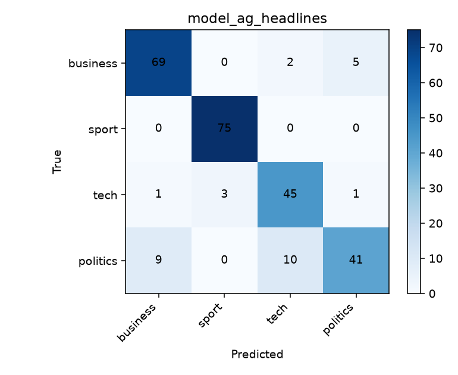
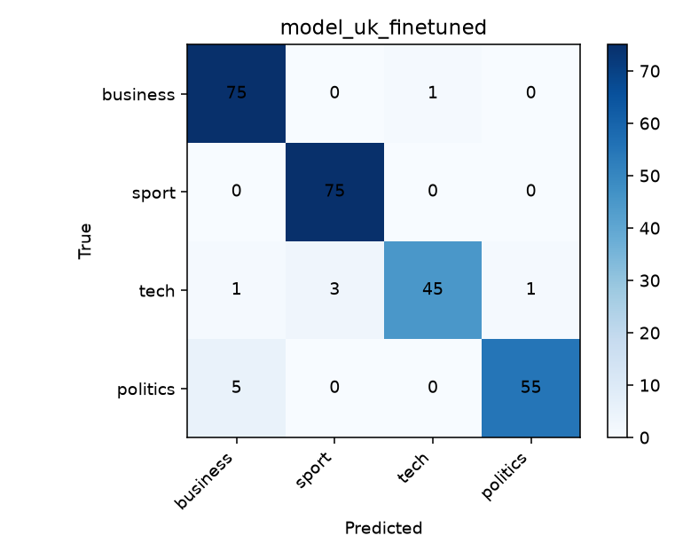

Cambridge 2026 · UK headlines · MPS
Before vs after UK fine-tuning
Same frozen BBC UK test set (n = 261). Compare AG-only DistilBERT, UK-only DistilBERT (no AG), and AG→UK continued fine-tuning — plus Naive Bayes baselines.
AG→UK − AG: Macro-F1 +0.0858
AG→UK − UK only: Macro-F1 +0.0122
Biggest class gain vs AG: politics +0.182
Label mix — train vs test
How many headlines per topic in UK train (fine-tune) and the frozen UK test. AG Stage-1 train is balanced: 7,125 per label (n = 28,500).
| Label | UK train | UK test |
|---|---|---|
| business | 351 (28.9%) | 76 (29.1%) |
| sport | 351 (28.9%) | 75 (28.7%) |
| tech | 235 (19.3%) | 50 (19.2%) |
| politics | 279 (22.9%) | 60 (23.0%) |
| Total | 1,216 | 261 |
UK val (early stop): n = 261 — same stratified mix (~29% business/sport, ~19% tech, ~23% politics).
System comparison
Accuracy, macro-F1, and micro-F1 on the frozen UK test set.
Per-class F1 — DistilBERT
AG-only vs UK-only vs AG→UK. Politics improves the most vs AG-only.
Numbers
Same values as RESULTS.md / metric JSON files.
| System | Accuracy | Macro-F1 | Micro-F1 |
|---|---|---|---|
| NB @ AG | 0.8467 | 0.8351 | 0.8467 |
| DistilBERT @ AG (before) | 0.8812 | 0.8695 | 0.8812 |
| NB @ UK | 0.8812 | 0.8744 | 0.8812 |
| DistilBERT UK only (no AG) | 0.9464 | 0.9432 | 0.9464 |
| DistilBERT AG→UK fine-tuned | 0.9579 | 0.9554 | 0.9579 |
Confusion matrices
True label (rows) vs predicted (columns) on UK test.

